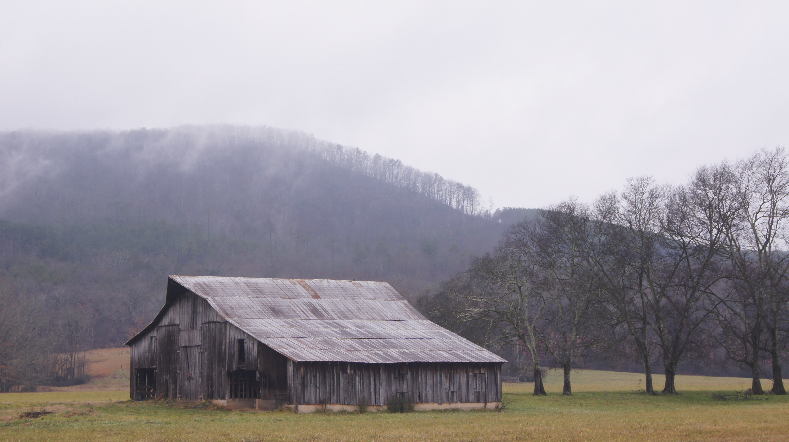
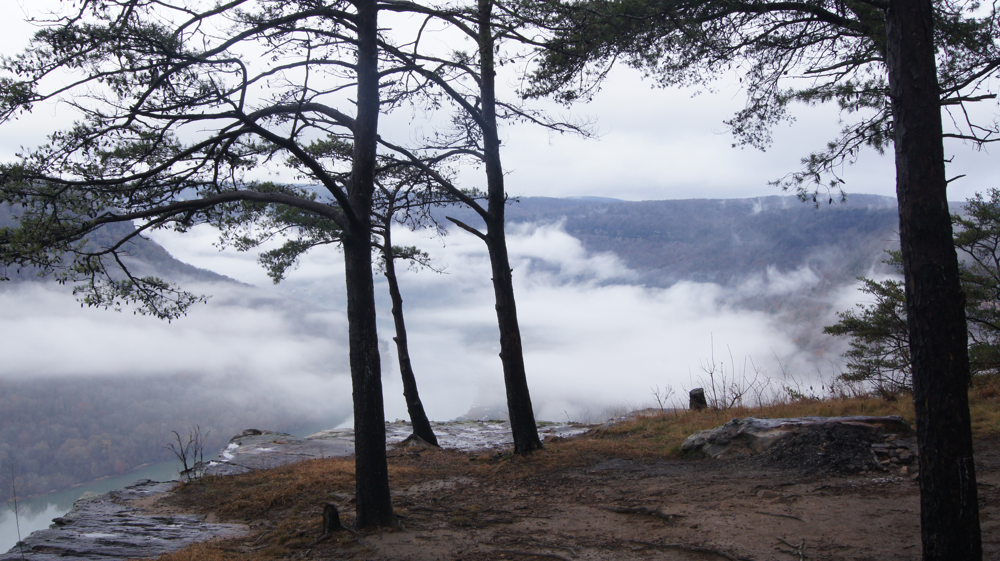
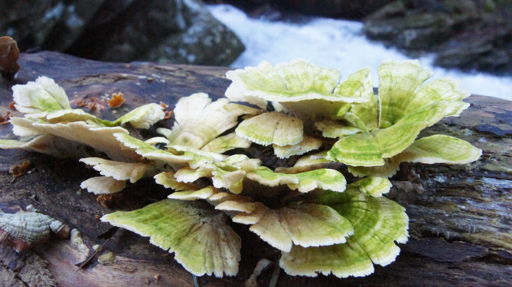
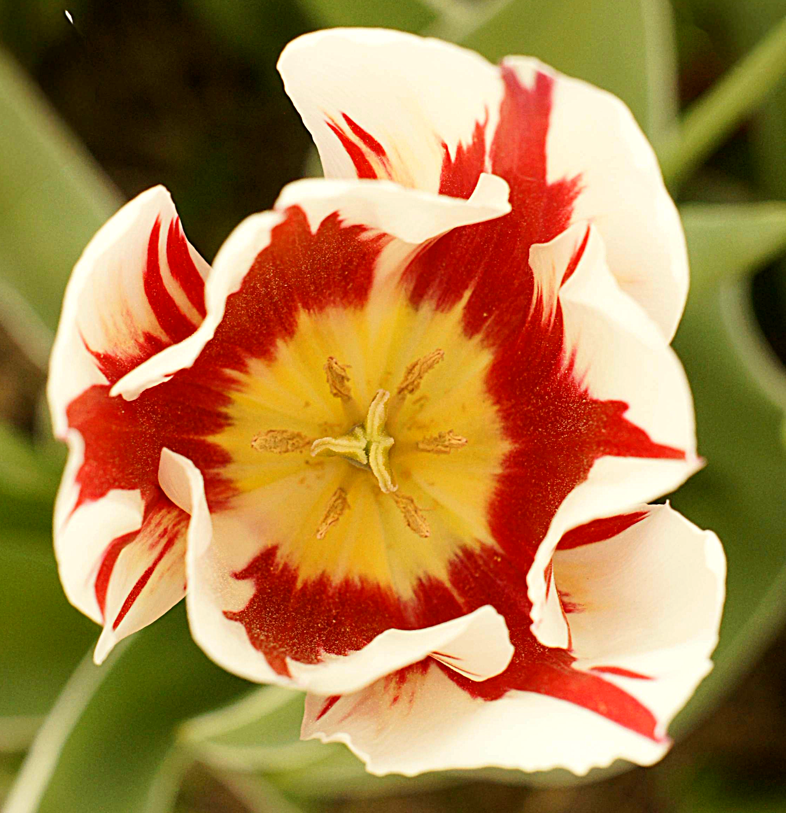
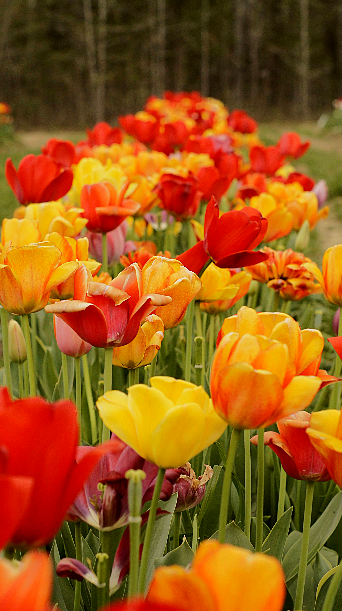

A little about me
Hi! My name's Eli and I'm a new(ish) photographer located in the Chattanooga region.
I mainly capture nature's intricacy and beauty; however, I occasionally do photoshoots for local Chattanoogans. Since I'm not too fond of writing up legal documents,
you'll only find moments of nature below which portrays both my attitude toward and perspective of anything from the subtle plant in a field full of others to a vast river
engulfed in the mountains. The images below are divided into multiple collections. Each collection represents a virtue or aspect the images have in common. First we have the tranquil wilderness, where you can find yourself transported to a foreign realm if you don't blink enough. Next, we have a gathering revealing the intracacy in nature,
of which all harmoniously sings to the one who forms all. Third, we encounter images depicting life and its vitality. Lastly, I invite you on a venture to
view my best, honest interpretation of the peak of imagery, what our eyes were meant to find, and through them what
our hearts were supposed to be satisfied by.
- Tranquil Wildnerness
- The Intracacy
- Life & Vitality
- The feast our eyes so desperately crave
Tranquil Wildnerness


The Intracacy


Life & Vitality

The feast our eyes so desperately crave
Some Background on my History
I was born in Chattanooga and was raised primarily in Soddy Daisy. I was homeschooled in a Christian home for about 14 years before heading off to Ivy Academy for my first years of High School. There I discovered my love for nature, running, and animals. I had some great hobbies, but there wasn't a clear path to dual enrollment or higher STEM subjects, so I transferred to Collegiate High my junior year. Once I realized all the outdoor events I would miss, I started to go on expeditions by myself. I took my camera to get experience photographing cool plants, waterfalls, or landmarks that interested me. I started collecting my shots into albums, and then editing them, and slowly I found my love for photography distinguising itself from hiking. I wondered if opening up my photography to new avenues would lead to a career, so I asked some classmates if they wanted a free photoshoot (which most curiously accepted). I've now realized that although photography isn't a career I want to pursue, it's a beneficial skill and resourceful hobby that might come in handy at the most unexpected times.